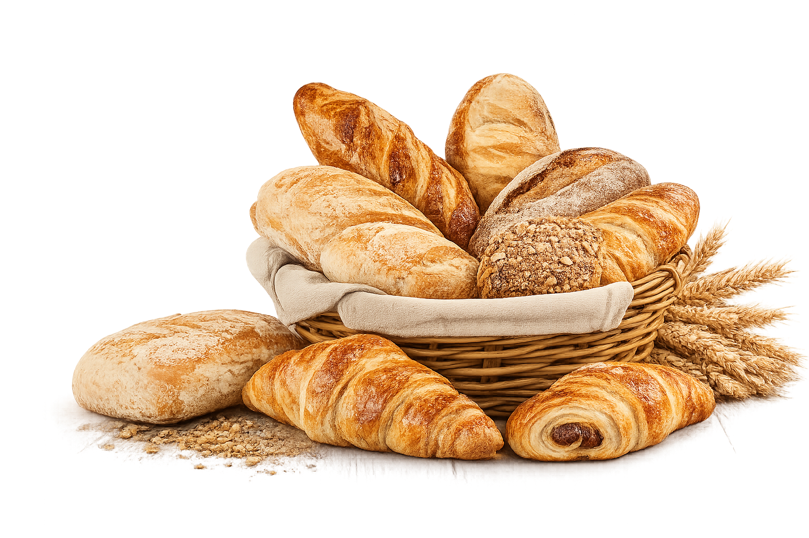

Sinds 1995
Sinds 1995
Welkom bij
Bakkerij CrumbelleElke dag vers gebakken met liefde en vakmanschap. Geniet van ons ambachtelijke brood, heerlijke koeken, knapperige croisants en nog vele andere lekkernijen.

Vers en knapperig
Ambachtelijk en gezond
Op bestelling gemaakt
Voor elke gelegenheid